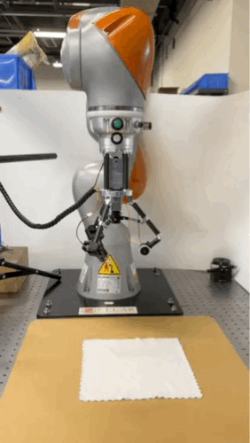
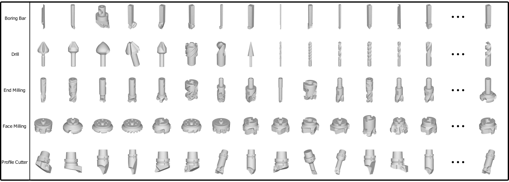

Aaron, Kun ZHANGResume:[cv] Email: kun.zhang [at] connect[dot]ust [dot] hk Research Interests: Robotics Perception, Manipulation, & Electromechanical System Design |
|
|
|
|
“利而不害，为而不争”
Currently, I am a PhD candidate from the Robotics Institute of HKUST. And working on the deformable object manipulation problem, especially textile and garment.

|
Mobile: Dynamic Objects Removal
[2023.01-2023.05] -IEEE IEEE Robotics and Automation Letters (RAL),2023 [paper(not yet available)] We propose DORF (Dynamic Object Removal Framework), a novel coarse-to-fine offline framework that exploits global 4D spatial-temporal LiDAR information to achieve clean static point cloud map generation |
|  | Design and Test of A Novel Modular Dexterous Gripper
[2022.10-2023.03] -IEEE International Conference on Automation Science and Engineering(CASE),2023 [Patent] [paper(not yet available)] We develop a modular dexterous end-effector prototype for grasping pieces of garments from a flat platform. |
| Peg-in-hole Manipulation
[2021.10-2022.09] -IEEE International Conference on Robotics and Automation(ICRA),2023 [paper] We develop a six-dimensional (6D) perceptive robotic assembly system that utilizes an in-hand RGB-D camera for peg-in-hole with multiple types of practical connectors. -IEEE/RSJ International Conference on Intelligent Robots and Systems(IROS),2023 [paper(not yet available)] We propose a novel search strategy for robotic insertion tasks that actively utilizes the information contained in the contact configuration. Our method is based purely on the robots proprioceptive sensing and does not need visual or tactile sensors. |
|

|
Joggling manipulation: Tossing
[2021.05 - 2021.08] Prior work for : Tencent Robotics-X Bartending Demo: Tossing Part We investigate whether using solely the on-board proprioceptive sensory modalities (e.g. F/T) can effectively capture and characterize typical dynamic manipulation processes. |
| Design and Test of A Novel Mobile Manipulator
[2021.01 - 2021.05] We developed a mobile manipulator platform for study. The platform consists of a mobile chassis and a lightweight robotic arm, and is equipped with a microprocessor, as well as a variety of sensors such as radar and depth cameras. |
|

|
Nonprehensile Manipulation: Ball Balancing
[2020.07-2020.10] We developed a ball balancing system using a cooperative robot arm and a motion capture system, which can accurately obtain the position of the ball, and using the force feedback at the end of the robot arm to maintain the balance of the ball on a plate in the case of interference. |
| Design and Test of A Novel Modular Force Control Manipulator
[2020.02 - 2020.07] We developed a modular force control manipulator prototype. This arm supports torque command control, the lightweight body is designed with carbon fiber linkages, and the structure can be switched between 4 and 6 degrees of freedom modes according to the actual needs of the work. |
|
|  | Machine Tools Recognition System
[2016.10 - 2018.10] -International Conference on Extreme Learning Machine(ELM),2018 [paper] -Cognitive Computation,2018 [paper] -IEEE Access,2020 [paper] We proposed a machine tools recognition system. The hybrid networks of Convolutional Neural Networks (CNNs) and Extreme Learning Machine (ELM) are developed for a 3D machine tools database recognition, which we constructed. |
| Intelligent Energy-saving Automatic Closing Device for Refrigerators
[2014.10 - 2015.05] National innovation and entrepreneurship training program for college students [Patent] [Paper] We designed a prototype of a door close machine, which realized automatic reset function with constant speed by using ratchet, friction blocks and gear set. |
|
© ZK. All rights reserved